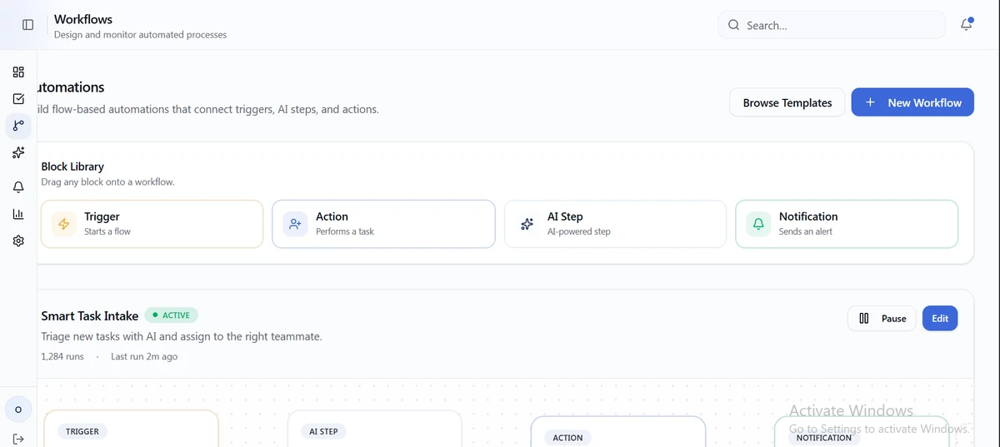
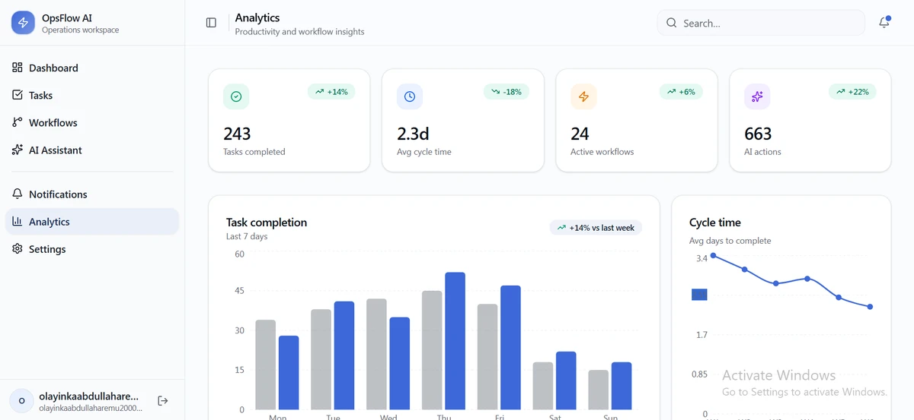
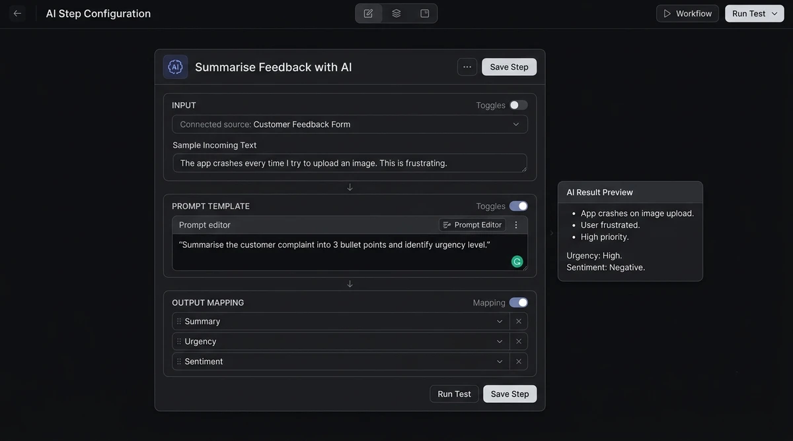

SaaS Concept
OpsFlow AI
One workspace for team tasks, AI insights, and automated workflows.
AI-native UX
Workflow Design
Interaction Design

Product designer focused on AI-native SaaS, workflow automation, and scalable UX architecture.
Concept projects exploring AI-native SaaS, marketplace UX, and automation design.
I'm a product design student at LASU, driven by a conviction that the best AI products are invisible: not because they're hidden, but because they feel obvious. I design workflows that reduce cognitive load, dashboards that surface insight without noise, and systems that respect the user's attention as the scarcest resource.
My approach combines systems-level thinking with hands-on prototyping: I map the full ecosystem before opening Figma, and I validate interaction patterns through low-fidelity tests before committing to pixels. I'm equally comfortable discussing API architecture as I am refining a micro-interaction easing curve.
Right now, I'm exploring how AI-native UX patterns can transform productivity tools, and looking for a team where I can contribute, learn, and ship.
LASU
B.Eng Electronics & Computer Engineering (Expected 2027)
Open to internships & junior product design roles
Remote teams juggling Slack, Notion, and Jira lose context switching between them. No single surface combines task management with AI-generated status insights and visual workflow automation, leaving PMs and ops leads manually stitching information together.
Discovery
Mapped pain points of 5 remote team personas (PM, Dev, Designer, Ops Lead, Founder); identified top 3 context-switching triggers
Define
Narrowed to 3 core jobs-to-be-done: track work, understand status, automate repetition
Design
Built full IA, component library, and 12-screen high-fidelity Figma prototype; designed AI summary card system
Prototype
Built interactive workflow builder in Lovable; ran 3 peer usability sessions and iterated on node editor layout


Real Supabase backend for live task sync · Multi-workspace support · AI prompt customisation per team
Students at large Nigerian universities rely on informal WhatsApp groups and verbal communication to order from campus vendors. No structured ordering, inventory tracking, or vendor management exists.
End-to-end product design: research, IA, wireframes, high-fidelity UI, and prototype testing with 4 LASU students.
Discovery
Observed campus vendor-student transactions at LASU; documented 4 core friction points in the order-to-delivery flow
Define
Scoped MVP to 3 actor types: Student, Vendor, Admin
Design
Student: browse → cart → confirm → track. Vendor: live orders + inventory. Admin: approvals + analytics.
Prototype
Paper-to-Figma flow; tested with 4 LASU students; iterated on cart confirmation step based on feedback


Campus GPS delivery zone logic · Lightweight PWA shell · Vendor notification system
Non-technical operators want to automate repetitive tasks but tools like Zapier overwhelm them with complexity and don't natively support AI-step logic. The cognitive load of learning trigger/action/filter paradigms creates drop-off before the first automation is built.
Discovery
Audited UX patterns in Zapier, Make, and n8n; identified 3 primary cognitive load bottlenecks for non-technical users
Define
Simplified to 3 node types: Trigger, Action, AI Step | progressive disclosure hides advanced config
Design
Drag-and-connect node editor; AI Step config panel with input → prompt template → output mapping
Prototype
Built 2 sample automation flows as interactive prototype; tested with 2 non-technical participants

LLM prompt templates per industry use-case · JSON export for developer handoff · Conditional branching (if/else) node type
I'm actively seeking internship and junior product design roles for 2026–2027. If you're building AI or SaaS products and value systems thinking, let's talk.